大数据000数据分析
未来30年数据将成为生产资料，计算会是生产力，互联网是一种生产关系。如果我们不数据化，不和互联网相连，那么会比过去30年不通电显得更为可怕。未来30年，互联网将不再是互联网公司的互联网，互联网是所有人的互联网。如果说过去20年互联网从无到有，那么未来30年，互联网将“从有到无”，这个“无”是无处不在的“无”，没有人能够离开网络而存在。——马云，第四届世界互联网大会
在我的18年的互联网行业工作经历中，很大一部分时间的工作是数据运营，从QQ秀到YY语音，再到迅雷，都经历了产品数据运营的流程优化、平台构建、分析应用等过程，亲历了数据运营在产品成长中发挥的重要作用。
不少人对数据运营的理解，局限于数据统计、原因分析等，其实这些只是数据运营工作的一小部分，数据最终是为产品服务的，数据运营，重点在运营，数据是载体。
数据运营是做什么
数据运营是做什么？ 个人的理解是：
推动团队明确产品目标，定义产品数据指标，创建数据上报通道和规则流程，高效的推动实现数据需求，观测产品数据，做好数据预警，分析数据变化原因，根据分析结果进行产品迭代和运营，为产品决策提供依据，用数据驱动产品和组织成长，达成组织目标。
通俗点说，数据运营搞清楚以下5个问题：
-
我们要做什么？——目标数据制订；
-
现状是什么？——行业分析，产品数据报表输出；
-
数据变化的原因？——数据预警，数据变化的原因分析；
-
未来会怎样？——数据预测；
-
我们应该做什么？——决策与数据的产品应用。
大致梳理了一下数据运营需要掌握的技能： 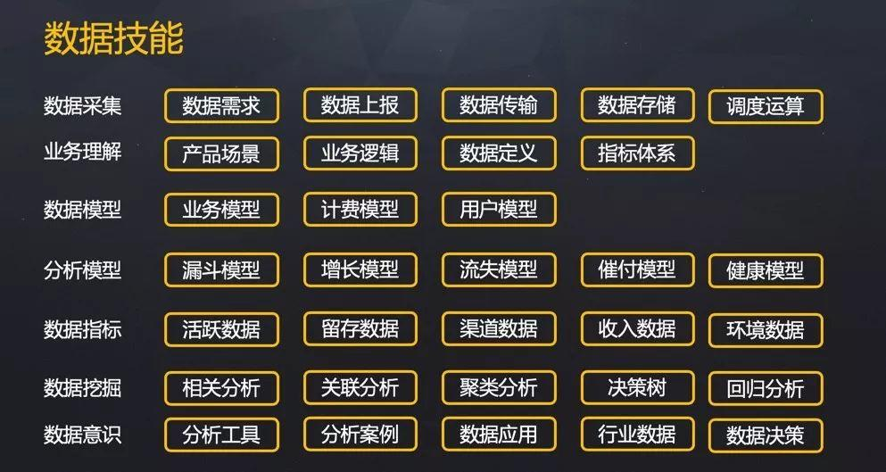
上面的这些技能概念较多，其实最基本的就是，先学好统计学，再深入进行业务实践，熟练掌握分析工具，例如最常用的Excel，再多学一个数据挖掘工具，个人使用的是SPSS。
SPSS的功能包括数据管理、统计分析、图表分析、输出管理等。SPSS统计分析过程包括描述性统计、均值比较、一般线性模型、相关分析、回归分析、对数线性模型、聚类分析、数据简化、生存分析、时间序列分析、多重响应等。
工具不难学，重要的是学习统计学，知道不同场景选用什么分析方法，如何进行分析结果的解读和应用。
后来，我把自己数据运营工作经历整理了一份企业构建数据运营体系的层级图：
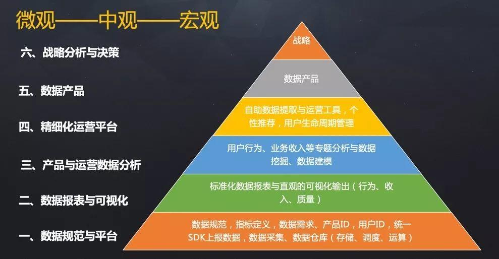
如何才能构建一个完整的产品数据运营体系？我根据自己的工作实践经验进行了梳理和总结，整个过程可以分为如下的11步，供大家参考。
第一步，制订产品目标
这是数据运营的起点，也是产品上线运营后进行评估的标准，以此形成闭环。
制订目标绝不能拍脑袋，可以根据业务发展、行业发展、竞品分析、往年产品发展走势、产品转化规律等综合计算得出。制订目标常用SMART原则来衡量。
-
S代表具体(Specific) 指工作指标要具体可评，不能笼统。例如我们制定YY语音基础体验的产品目标，如果是提升产品体验，则不够具体，每个人的理解不一致，当时我们的基础产品目标则是提升新用户次日留存，则非常具体。
-
M代表可度量(Measurable) 指绩效指标是数量化或者行为化的，验证这些绩效指标的数据或者信息是可以获得的；提升新用户次日留存率，则需要给出具体的数值。
-
A代表可实现(Attainable) 指绩效指标在付出努力的情况下可以实现，避免设立过高或过低的目标；新注册用户的次日留存率，也不是拍脑袋得出的，当时我们基于YY新用户次日留存率的历史数据和游戏用户的新注册用户留存率的行业参考数值，制订了一个相对有挑战性的目标，从新注册用户次日留存率从25%提升到35%。
-
R代表相关性(Relevant) 是与工作的其它目标是相关联的；绩效指标是与本职工作相关联的；新用户的次日留存率，和用户行为息息相关，例如用户对语音工具的认可程度，用户对YY平台的内容喜好程度等，所以新用户的次日留存和产品的性能、内容受欢迎程有较强的相关性。
-
T代表有时限(Time-bound) 注重完成目标的特定期限。
产品目标可以这样制订：在2013年12月31日前，将YY语音新注册用户的次日留存率从25%提升到35%。
新用户次日留存率的提升，意味着更多用户的活跃转化，带动整个用户活跃数量的增长。
这里需要注意，需要洞察目标背后的本质，不能唯数据论，例如我做过的提高YY语音新注册用户留存率的项目，如果只是看留存率的数据变化，是很容易达到的。
记得当时我用的一个方法是用户分类，把不同渠道、不同行为的用户进行分类，发现有部分垃圾新用户大大影响了整体留存率数据，这部分用户很多是机器注册产生，并非真正的用户，剔除掉这部分用户，留存数据高了很多，但这不能说，我们就完成了任务。
因为这个目标的背后，实际是需要获得活跃用户的增长，新用户留存率，只是一个数据体现，所以不能只看新用户留存率这个单一指标，必须从提高新用户注册数量、有效用户留存、用户活跃、付费转化等多个指标来衡量工作价值。
第二步，定义产品数据指标
沿着上面的目标制订，就需要考虑数据指标，上面的案例，我们给出的目标是新用户留存率，做好了新用户留存率，需要去判断这个数据指标的实现是否真的促进了整个产品活跃用户的增长。
产品数据指标是反应产品健康发展的具体的数值，我们需要对数据指标给出明确定义，还包括数据上报方法、计算公式等。
例如上文的次日留存率，可以定义为：次日留存率是一个比率，分母是当天新注册并在当天登录YY客户端的YY帐户数，分子是分母当中在第二天再次登录YY客户端的YY帐户数。
注意这里的细节，第一天和第二天，需要有明确的时间点，例如0点到24点，计算为一天；问题来了，一个新用户在第一天的23点注册并登录YY客户端，到第二天的凌晨1点下线；按照上面的定义，这个用户或许将不会被记录为次日留存用户，因为这里没有定义清楚数据上报细节。
定义是第二天再次登录YY客户端，上面案例的用户在第二天是没有登录行为的，但他确实是连续两天都在登录状态的用户。
所以针对这个定义，需要补充细节：用户登录状态，如果是5分钟进行一次心跳包的上报，那么这位新用户就可以被上报为第二天的登录状态用户，如果在0点5分之前下线之后，持续到第二天的24点，仍未有登录状态，那么将不被记录为留存用户。
我们根据产品目标来选择数据指标，例如网页产品，经常用PV、UV、崩失率、人均PV、停留时长等数据进行产品度量。定义产品指标体系，需要产品、开发等各个团队达成共识，数据指标的定义是清晰的，并且有据可查，不会引起数据解读的理解差异。
产品在不同生命周期，关注的数据指标侧重点也会不同，下表大致列出了一些各个阶段需要重点关注的指标，除了常见的用户指标、收入指标，我们还必须重视技术层面的性能指标。
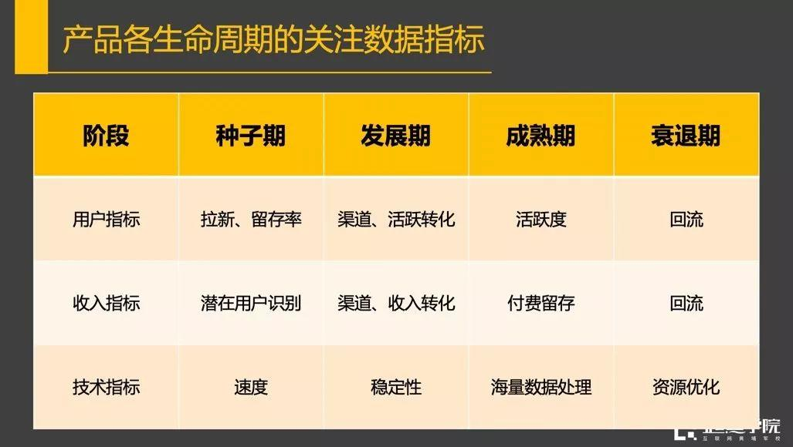
好的数据指标，有五个要点可供参考：
（1）能够反映用户需求的满足、产品核心价值以及发展趋势。这些指标变好了能说明公司是在往好的方向上发展。
（2）好的数据指标是可比较的。比较在不同的时间段，用户群体，竞争产品之间的表现，可以更好的洞察产品的实际走向。
（3）易懂、可控。很容易地理解、记住，方便统计。
（4）好的数据指标多数时候是一个比率。
（5）指标随业务而进化。不同阶段的关键性指标应该是随着业务的变化而变化的。
第三步，构建产品数据指标体系
在数据指标提出的基础上，我们按照产品逻辑进行指标的归纳整理，使之条理化。
新用户的次日留存率是我们订制的一个核心目标，但实际上，只看次日留存率还是不够的，还需要综合考察影响用户留存率的多种因素，才能更准确的了解产品的健康发展。如图1所示，是常用的一种指标体系，包含：用户新增、用户活跃、付费、其他数据。
图1 互联网产品常用数据指标体系 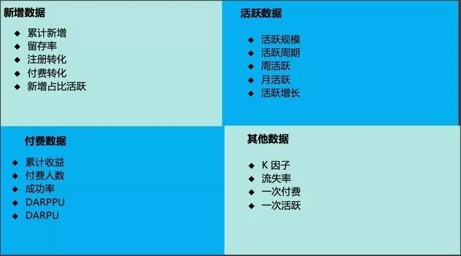
在我们做YY语音客户端产品的时候，会用到下面的指标体系，包括：账号体系、关系链数据、状态感知数据、沟通能力等四大方面。
具体指标有：好友的个数分布、观看频道节目的时长、IM聊天时长、个人状态的切换与时长等，如图2所示：
图2 IM即时通讯产品数据指标体系 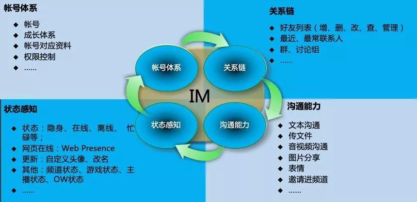
第四步，提出产品数据需求
产品指标体系的建立不是一蹴而就的，产品经理根据产品发展的不同阶段，有所侧重的进行数据需求的提出，一般的公司都会有产品需求文档的模板，方便产品和数据上报开发、数据平台等部门同事沟通，进行数据建设。
创业型中小企业，产品数据的需求提出到上报或许就是1-2人的事情，但同样建议做好数据文档的建设，例如数据指标的定义，数据计算逻辑等。
图3是我在YY语音客户端团队建立的基础产品数据需求实现流程。
其实在大多数时候，并不需要这么一个数据需求流程，只是当时我们在数据需求刚刚开始进行规范化，数据需求评审过程，也是培训过程，让更多同事有数据意识，到后面，数据需求是融入到产品需求流程的。
图3 YY事业部基础产品数据需求实现流程图（施行） 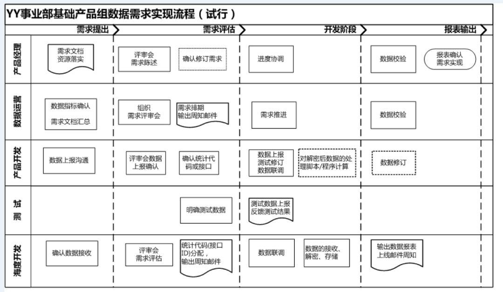
常见的数据上报需求，有两类：
-
标准协议上报，例如按钮点击上报；
-
自定义协议上报。
-
标准协议上报数据需求范例 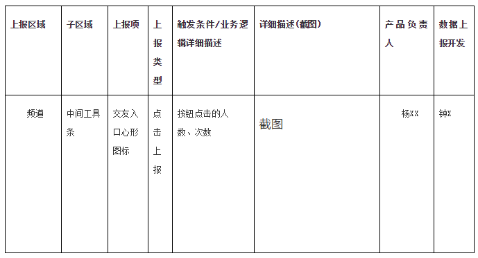
-
自定义协议上报数据需求范例 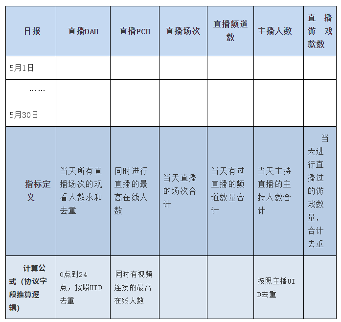 报表名称：YY事业部——基础产品组——游戏直播运营日报。
第五步，上报数据
这个步骤就是开发根据产品经理的数据需求，按照数据上报规范，完成上报开发，将数据上报到数据服务器。
上报数据的关键是数据上报通道的建设，原来在腾讯工作时候，没有体会到这个环节的艰辛，因为数据平台部门已经做了完备的数据通道搭建，开发按照一定规则，使用统一的数据SDK进行数据上报就可以了。
后来在YY，属于发展型公司，则是从上报通道开始进行建设，也让我得到更多锻炼提升的机会。其中很关键的一个环节，就是数据上报测试，曾经因为该环节的测试资源没到位，造成不必要的麻烦。
很多创业公司没有自己的数据平台，可以利用第三方的数据平台：网页产品，可以使用百度统计（tongji.baidu.com）；移动端产品，可以使用友盟(www.umeng.com)、TalkingData(www.talkingdata.com) 等平台。
例如下表，就是页面流量数据上报的发送函数send_web_pv，源于迅雷哈勃数据平台规范。
表3 页面流量数据上报的发送函数send_web_pv 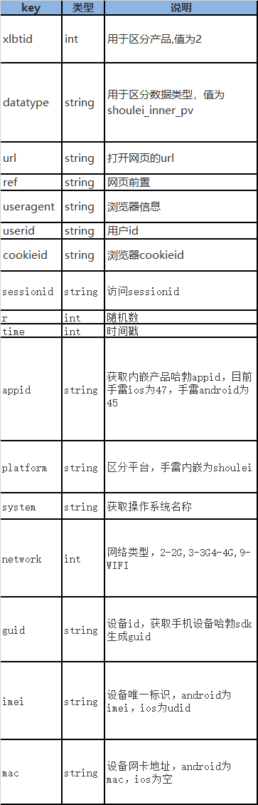
下表是某直播做APP数据上报的埋点范例。（数据埋点，就是在功能逻辑中添加统计逻辑）。
表4 某直播APP数据上报范例 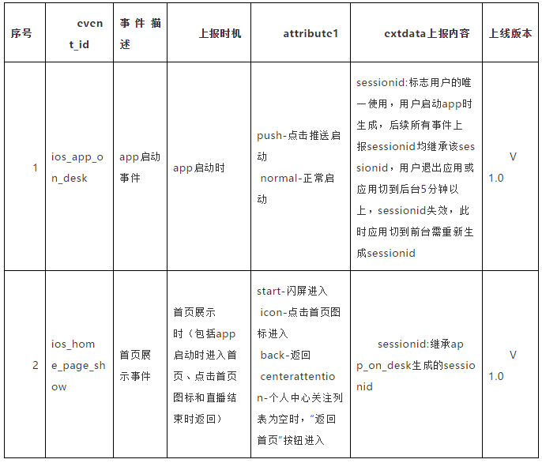
目前也有无埋点的数据上报方式，参见这篇文章《揭开GrowingIO无埋点的神秘面纱》。
第六-八步，数据采集与接入、存储、调度与运算
每一步都是一门学问，例如采集数据涉及接口创建，要考虑数据字段的拓展性，数据采集过程中的ETL数据清洗流程，客户端数据上报的正确性校验等；数据存储与调度、运算，在大数据时代，更是很有挑战性的技术活。
1. 数据的采集与接入
ETL，是英文 Extract-Transform-Load 的缩写，用来描述将数据从来源端经过抽取（extract）、转换（transform）、加载（load）至目的端的过程。
ETL一词较常用在数据仓库，但其对象并不限于数据仓库。ETL是构建数据仓库的重要一环，用户从数据源抽取出所需的数据，经过数据清洗，最终按照预先定义好的数据仓库模型，将数据加载到数据仓库中去。
下图是产品数据体系的一个常见流程图，数据采集、存储、运算，通常就在图中的数据中心完成。
图4 数据体系流程 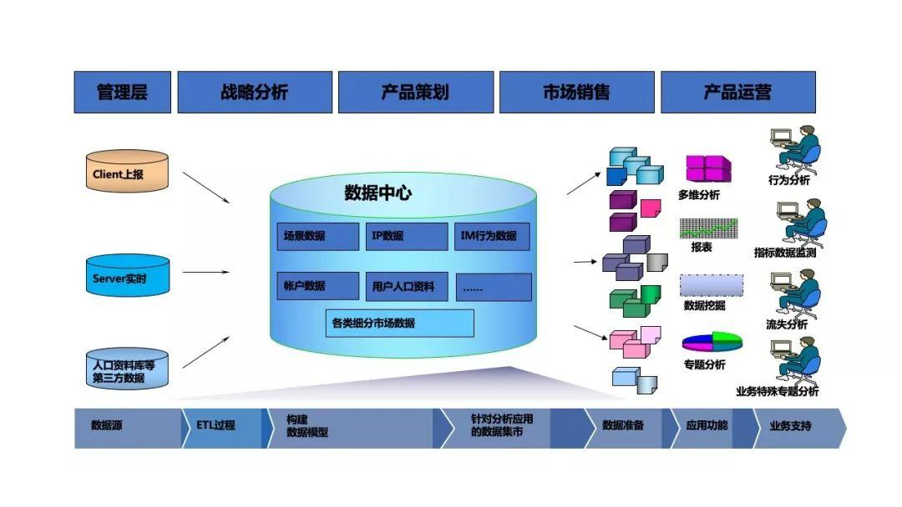
确认完数据上报之后，接下来几个事情就比较偏技术化了。首先需要上报的数据通过什么样的方式采集和存储到我们的数据中心。
数据采集分为两步，第一步从业务系统上报到服务器，这部分主要是通过cgi或者后台server，通过统一的logAPI调用之后，汇总在logServer中进行原始流水数据的存储。当这部分数据量大了之后，需要考虑用分布式的文件存储来做，外部常用的分布式文件存储主要是HDFS。这里就不细展开。
图5 原始数据上报存储到文件的架构图 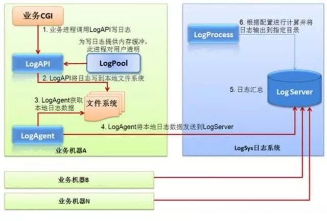 数据存储到文件之后，第二步就进入到ETL的环节，ETL就是指通过抽取（extract）、转换（transform）、加载（load）把日志从文本中，基于分析的需求和数据纬度进行清洗，然后存储在数据仓库中。
以腾讯为例子：
腾讯大数据平台现在主要从离线和实时两个方向支撑海量数据接入和处理，核心的系统包括TDW、TRC和TDbank。
图6 腾讯数据平台系统 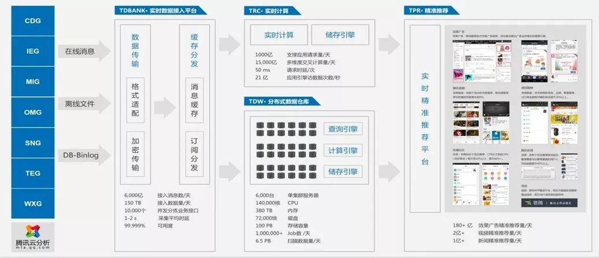
腾讯数据平台的数据收集、分发、预处理和管理工作，都是通过一个TDBank的平台来实现的。整个平台主要解决在大数据量下面数据收集和处理的量大、实时、多样的问题。通过数据接入层、处理层和存储层这样的三层架构来统一解决接入和存储的问题。
（1）接入层
接入层可以支持各种格式的业务数据和数据源，包括不同的DB、文件格式、消息数据等。数据接入层会将收集到的各种数据统一成一种内部的数据协议，方便后续数据处理系统使用。
（2）处理层
接下来处理层用插件化的形式来支持多种形式的数据预处理过程。对于离线系统来说，一个重要的功能是将实时采集到的数据进行分类存储，需要按照某些维度（比如某个key值+时间等维度）进行分类存储；同时存储文件的粒度（大小/时间）也是需要定制的，使离线系统能以指定的的粒度来进行离线计算。对于在线系统来说，常见的预处理过程如数据过滤、数据采样和数据转换等。
（3）数据存储层
处理后的数据，使用HDFS作为离线文件的存储载体。保证数据存储整体上是可靠的，然后最终把这部分处理后的数据，入库到腾讯内部的分布式数据仓库TDW。
图7 TDW架构图 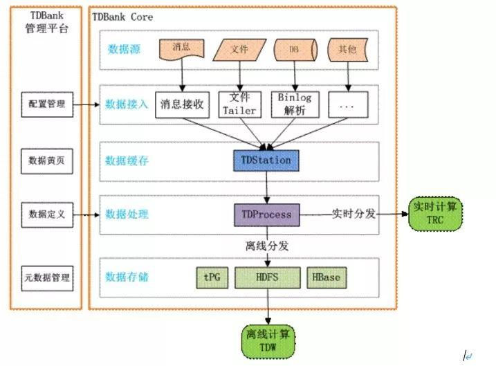
TDBank是从业务数据源端实时采集数据，进行预处理和分布式消息缓存后，按照消息订阅的方式，分发给后端的离线和在线处理系统。
图8 TDBank数据采集与接入系统 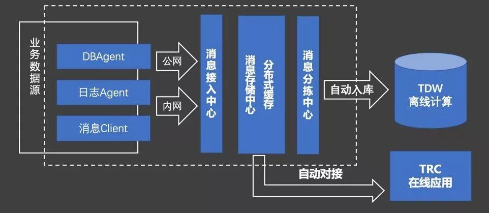
TDBank构建数据源和数据处理系统间的桥梁，将数据处理系统同数据源解耦，为离线计算TDW和在线计算TRC平台提供数据支持。目前通过不断的改进，将以前Linux+HDFS的模式，转变为集群+分布式消息队列的模式，将以前一天才能处理的消息量缩短到2秒钟！
从实际应用来看，产品在考虑数据采集和接入的时候，主要要关心几个纬度的问题：
多个数据源的统一，一般实际的应用过程中，都存在不同的数据格式来源，这个时候，采集和接入这部分，需要把这些数据源进行统一的转化。
采集的实时高效，由于大部分系统都是在线系统，对于数据采集的时效性要求会比较高。
脏数据处理，对于一些会影响整个分析统计的脏数据，需要在接入层的时候进行逻辑屏蔽，避免后面统计分析和应用的时候，由于这部分数据导致很多不可预知的问题。
2. 数据的存储与计算
完成数据上报和采集和接入之后，数据就进入存储的环节，继续以腾讯为例。
在腾讯内部，有个分布式的数据仓库用来存储数据，内部代号叫做TDW，它支持百PB级数据的离线存储和计算，为业务提供海量、高效、稳定的大数据平台支撑和决策支持。基于开源软件Hadoop和Hive进行构建，并且根据公司数据量大、计算复杂等特定情况进行了大量优化和改造。
从对外公布的资料来看，TDW基于开源软件hadoop和hive进行了大量优化和改造，已成为腾讯最大的离线数据处理平台，集群各类机器总数5000台，总存储突破20PB，日均计算量超过500TB，覆盖腾讯公司90%以上的业务产品，包含广点通推荐，用户画像，数据挖掘和各类业务报表等，都是通过这个平台来提供基础能力。
图8 腾讯TDW分布式数据仓库 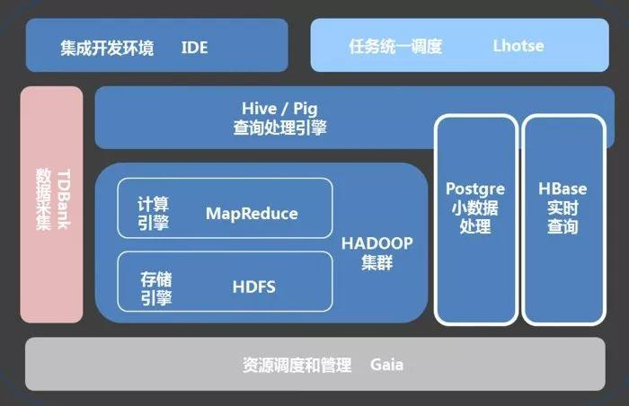
图9 TDW业务示意图 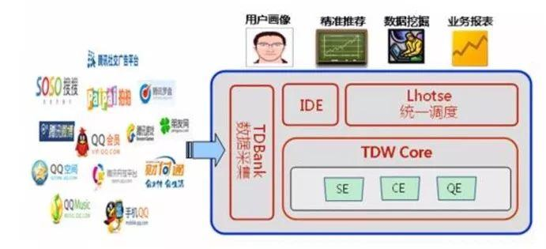
从实际应用来看，数据存储这部分主要考虑几个问题：
数据安全性，很多数据是不可恢复的，所以数据存储的安全可靠永远是最重要的。一定要投入最多的精力来关注。
数据计算和提取的效率，做为存储源，后面会面临很多数据查询和提取分析的工作，这部分的效率需要确保。
数据一致性，存储的数据主备要保证一致性。
这一步的关键，企业要构建自己的私有数据平台，就是找到有数据平台开发经验的架构师、工程师，事半功倍，当然，如果是中小企业，直接用云产品吧，效率更高。
第九步：获取数据
就是产品经理，数据分析人员从数据系统获得数据的过程，常见的方式是数据报表和数据提取。
报表的格式，一般会在数据需求阶段明确，尤其是有积累的公司，通常会有报表模板，照着填入指标就好了。强大一些的数据平台，则可以根据分析需要，自助的选择字段（表头）进行自助报表的配置和计算生成。
下面是做数据报表设计的几个原则：
- 提供连续周期的查询功能 （1）报表要提供查询的起始时间，可以查看指定时间范围内的数据。忌讳只有一个时间点，无法看数据的趋势。
（2）对一段时间范围内的数据能够分段或汇总，能够对不同阶段进行比较。
- 查询条件与维度相匹配 （1）有多少个维度，就提供多少个对应的查询条件。尽量满足每个维度都能分析。
（2）查询条件要提供开、合，以及具体值的过滤功能。既能看总体，又能看明细，还要能看单一。
（3）查询条件的顺序，尽量与维度的顺序对应，最好按从大到小的层次。
- 图表与数据要一致 （1）图表显示的趋势，要与相应的数据一致，避免数据有异议；
（2）有图就必须有数据，但是，有数据可以没有图；
（3）图表内的指标不要太多，并且指标间的差距不要太大。
- 报表要单一 （1）一张报表，只做一份分析功能，多个功能尽量拆到不同的表报中；
（2）在报表中尽量不要有跳转；
（3）报表只提供查询功能。
看几张常用报表，WEB产品的流量报表，来自百度，关注PV、UV、新访客比率、跳出率、平均访问时长等。
专门说一下跳出率，这个数据反应了用户进入网站的着陆页（不一定是首页）价值，是否可以吸引用户进行一次点击，如果用户达到着陆页，没有任何点击，则跳出率增大。
图10 百度统计的网页数据报表 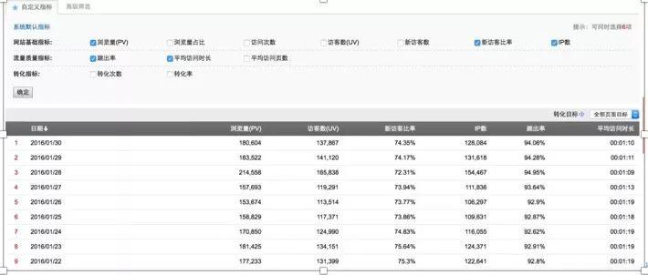
再看友盟数据平台提供的产品留存率数据报表，通常关注的留存率有：1天后留存、7天后留存、30天后留存。
图11 友盟的留存数据报表 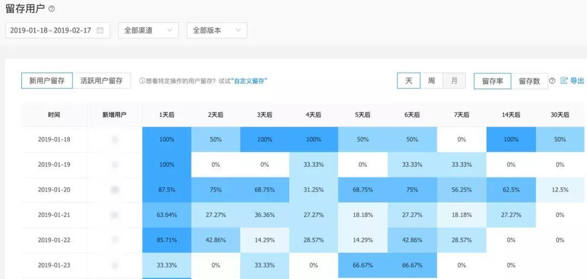
数据提取，在做产品运营中，是很常见的需求，例如提取某一批销量较好的商品及其相关字段，提取某一批指定条件的用户等。同样，功能比较完备的数据平台，会有数据自助提取系统，不能满足自助需求，则需要数据开发写脚本进行数据提取。
第十步：观测和分析数据
这里主要是数据变化的监控和统计分析，通常我们会对数据进行自动化的日报表输出，并标识异动数据，数据的可视化输出很重要。
数据分析常用于：了解产品现状，了解发展趋势，发现问题，认清用户，营销推广。
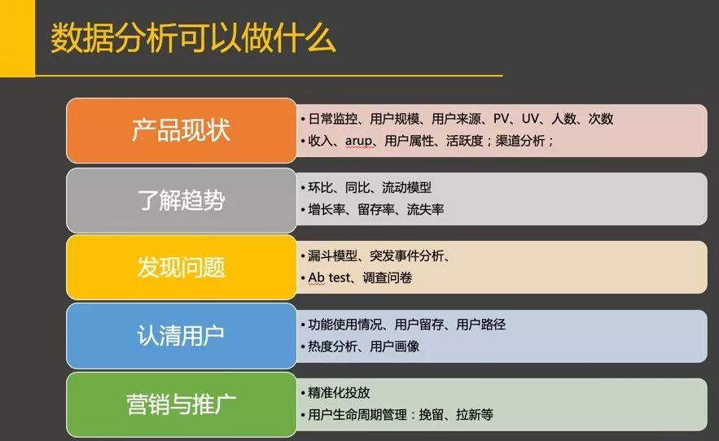 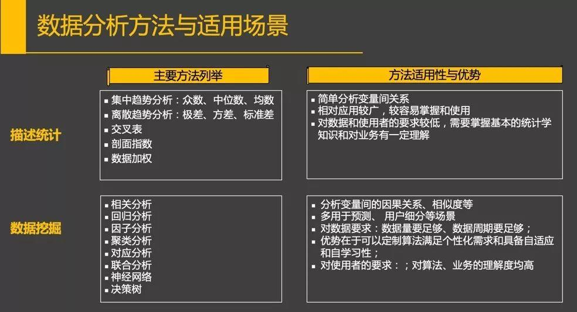
常用的软件是EXCEL和SPSS，可以说是进行数据分析的基本技能，以后再分享个人在实际工作中对这两款软件的使用方法和技巧。
需要注意的是，在进行数据分析之前，先进行数据准确性的校验，判断这些数据是否是你想要的，例如从数据定义到上报逻辑，是否严格按照需求文档进行，数据的上报通道是否会有数据丢包的可能，建议进行原始数据的提取抽样分析判断数据准确性。
数据解读在这个环节至关重要，同一份数据，由于产品熟悉度和分析经验的差异，解读结果也大不一样，因此产品分析人员，必须对产品和用户相当了解。
绝对数值通常难以进行数据解读，通常都是通过比较，才更能表达数据含义。
例如某产品上线后的第一周，日均新增注册10万人，看起来数据不错，但是如果这款产品是YY语音推出的新产品，并且通过YY弹窗消息进行用户触达，每天千万次的用户曝光，仅仅带来10万新增，则算不上是较好的产品数据。
图13 通过比较更清晰表达数据含义 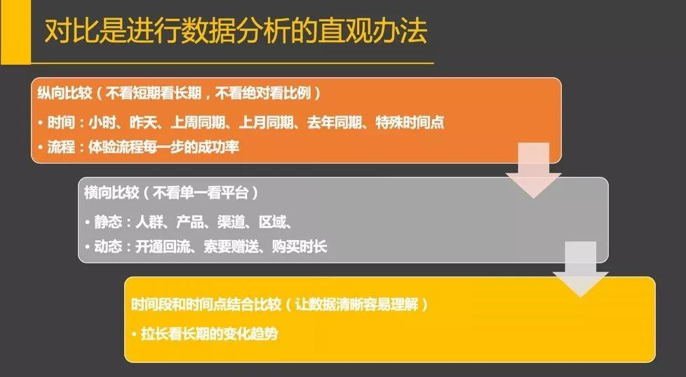
纵向比较，例如分析YY语音新注册用户的数据变化，那么可以和上周同期、上月同期、去年同期进行对比，是否有相似的数据变化规律。
横向比较，同样是YY语音新用户注册数据的变化，可以从漏斗模型进行分析，从用户来源的不同渠道去看每个渠道的转化率是否有变化，例如最上层漏斗，用户触达渠道有无哪个数据有较大变化，哪个渠道的某个环节有转化率的数据变化。还可以进行不同业务的横向比较，例如YY语音新增注册数据、多玩网流量数据、YY游戏新增注册用户数据进行对比，查找数据变化原因。
纵横结合对比，就是把多个数据变化的同一周期时间段曲线进行对比，例如YY新增注册用户、多玩网的流量数据、YY游戏新增注册用户的半年数据变化，三条曲线同时进行对比，找出某个数据异常的关键节点，再查找运营日志，看看有无运营活动的组织、有无外部事件的影响、有无特殊日子的影响因素。
数据分析结果的输出，通常采用直观的可视化展现方式，选择一种合理的图表，使得分析结果更直观。
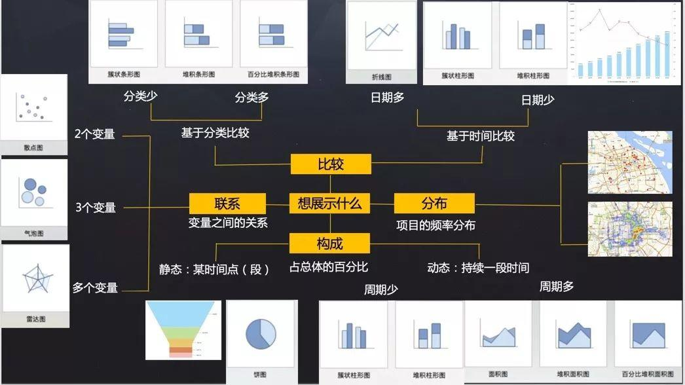
推荐两个实用的可视化工具：
百度图说：https://tushuo.baidu.com(https://tushuo.baidu.com) 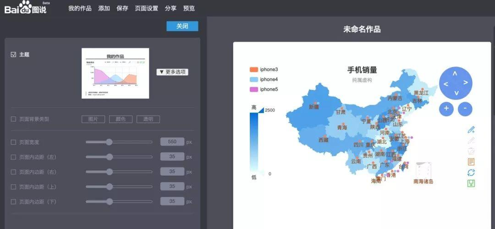
文字云图：https://wordart.com(https://wordart.com)
自定义图片生成个性化文字云图。

关于文字云图的攻略文章：
文字云图攻略（二）：自定义图形做个性文字云图
第十一步：产品评估与数据应用
这是数据运营闭环的终点，同时也是新的起点，数据报表绝不是摆设，也不是应付领导的提问，而是切实的为产品优化和运营的开展服务.
正如产品人员的绩效，不仅仅是看产品项目是否按时完成，按时发布，更是要持续进行产品数据的观测分析，评估产品健康度，同时将积累的数据应用到产品设计和运营环节，例如亚马逊的个性化推荐产品，例如QQ音乐的猜你喜欢，例如淘宝的时光机，例如今日头条的推荐阅读等等。数据产品应用，大致可以分为以下几类：
（1）以效果广告为代表的精准营销 推荐周期短，实时性要求高；用户短期兴趣和即时行为影响力大；投放场景上下文和访问人群特性。
产品案例：谷歌、Facebook、微信朋友圈。
下图是微信的用户数据定向能力，可以从地域、性别年龄、手机、婚恋、学历等多维度进行用户精准定位： 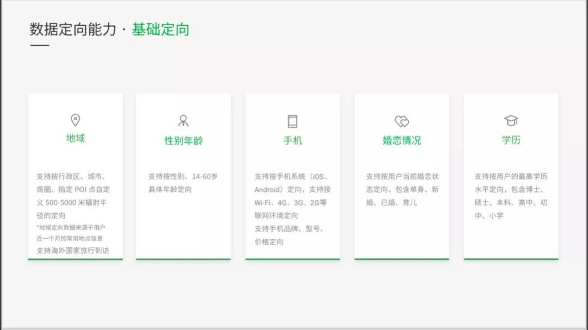
微信朋友圈广告，虽然很多人说买不起，但很多时候是你想不想买，随着数据积累，广告会越来越精准。
（2）以音频、视频推荐为代表的内容推荐 长期兴趣的累积影响力大；时段和热点事件；多维度内容相关性很重要。
产品案例：Youtube、网易云音乐、抖音、QQ音乐
下图是抖音给我推荐的小姐姐、马云、风景，大体符合我这个40岁大叔、互联网从业者、旅游爱好者的喜欢。
（3）以电商推荐为代表的购物推荐 长期+短期兴趣+即时行为综合；最贴近现实，季节与用户生活信息很关键；追求下单与成交，支付相关。
产品案例：亚马逊、淘宝、京东。
下图是淘宝给我的推荐，大致符合一个男性用户、家有小朋友、喜欢户外运动的用户的产品推荐。
总结
最后，一张图小结数据运营11步：
图14 数据运营11步 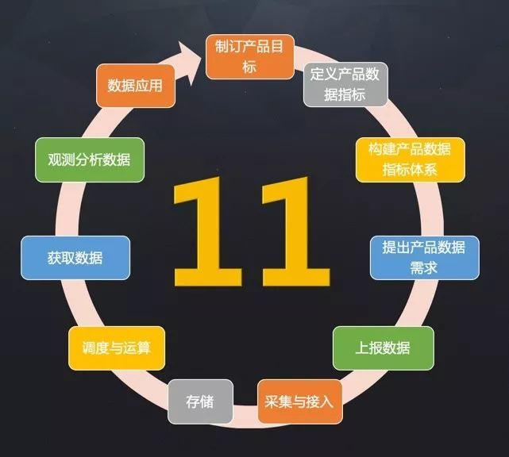
从制订产品目标到最后基于目标进行产品评估与运营优化，形成数据运营闭环。这个流程和规范，需要各个部门都能统一意识，每个产品终端都能按照规范流程将数据统一上报，建立公司级的统一数据中心，进行数据仓库建设，才有可能将数据价值最大化，让数据成为生产力。
再从组织落地方面小结产品数据运营体系构建，可以从以下五大要素进行考虑： 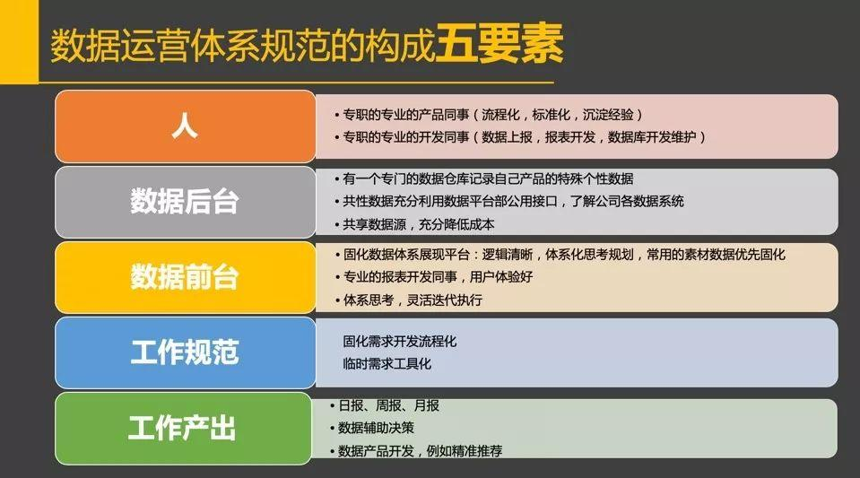
（1）人：专职的数据运营同事
专职的专业的产品同事，负责建立产品数据体系的流程化、标准化，沉淀经验，推动体系的持续优化发展；专职的专业的开发同事，负责数据上报，报表开发，数据库开发维护等工作，保证产品数据体系的开发实现。
（2）数据后台：全面系统的数据仓库
有一个专门的统一数据仓库记录自己产品的特殊个性数据，共性数据充分利用数据平台部公用接口获取，共享数据源，充分降低成本。
（3）数据前台：固化数据体系展现平台
需要专业的报表开发同事， 体系化思考报表系统，灵活迭代执行，而不是简单的承接报表需求，造成报表泛滥。
（4）工作规范：需求实现流程化
就是前面描述的11步构建产品数据体系的流程和方法，其中的数据需求把握好两点，一是固化需求开发流程化，二是临时需求工具化。
（5）工作产出：数据应用
常规的数据工作就是各种数据分析，输出日报、周报、月报；基于数据分析基础上进行决策依据提供。进行数据产品开发，例如精准推荐、用户生命周期管理等产品策划。
以上内容是我多年工作实践的小结，在此也感谢很多和我共事过的数据工作同事给了很多帮助：恭伟、畅波、春哥、夏聪、宇闻、志华、敬宓、小卫、坚裕等。
公众号作者BLUES（兰军）：致力于教育+互联网行业产品打造，梅沙科技创始人，原迅雷产品总监，腾讯、YY语音高级产品经理，公众号ID：bluemidou，写了600多篇原创文章，欢迎留言交流。